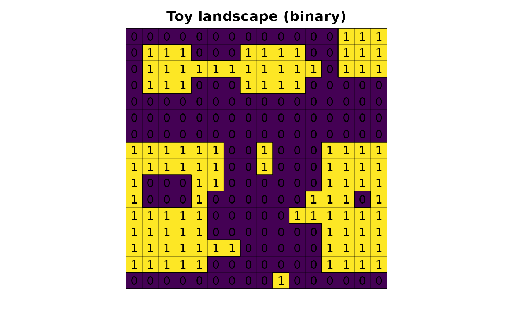
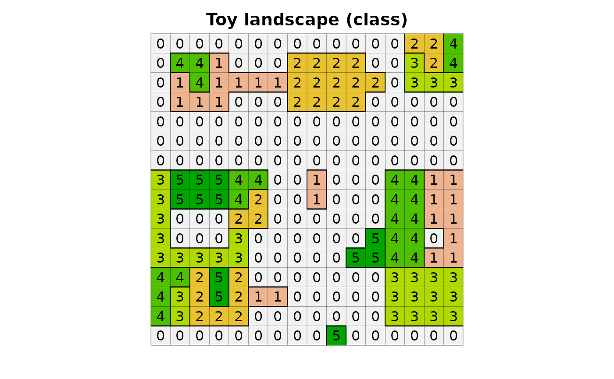
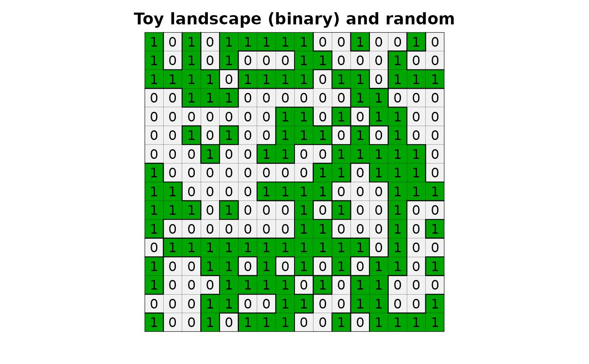
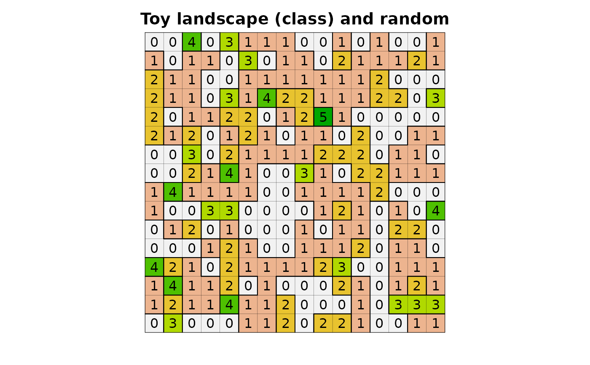

Create a toy landscape.
Examples
library(lsmetrics)
library(terra)
# toy landscape
toy_landscape_binary <- lsmetrics::lsm_toy_landscape(type = "binary", random = FALSE)
toy_landscape_multiclass <- lsmetrics::lsm_toy_landscape(type = "multiclass", random = FALSE)
set.seed(42)
toy_landscape_binary_random <- lsmetrics::lsm_toy_landscape(type = "binary", random = TRUE)
toy_landscape_multiclass_random <- lsmetrics::lsm_toy_landscape(type = "multiclass", random = TRUE)
# plot
plot(toy_landscape_binary, legend = FALSE, axes = FALSE, main = "Toy landscape (binary)")
plot(as.polygons(toy_landscape_binary, dissolve = FALSE), lwd = .1, add = TRUE)
plot(as.polygons(toy_landscape_binary), add = TRUE)
text(toy_landscape_binary)

plot(toy_landscape_multiclass,
col = c("white", "#00a600", "#fffeb6", "#bcb9d8", "#fb7f73", "#7eb0d0"),
legend = FALSE, axes = FALSE, main = "Toy landscape (multi-class)")
plot(as.polygons(toy_landscape_multiclass, dissolve = FALSE), lwd = .1, add = TRUE)
plot(as.polygons(toy_landscape_multiclass), add = TRUE)
text(toy_landscape_multiclass)

plot(toy_landscape_binary_random, legend = FALSE, axes = FALSE, main = "Toy landscape (binary) and random")
plot(as.polygons(toy_landscape_binary_random, dissolve = FALSE), lwd = .1, add = TRUE)
plot(as.polygons(toy_landscape_binary_random), add = TRUE)
text(toy_landscape_binary_random)

plot(toy_landscape_multiclass_random,
col = c("white", "#00a600", "#fffeb6", "#bcb9d8", "#fb7f73", "#7eb0d0"),
legend = FALSE, axes = FALSE, main = "Toy landscape (multi-class) and random")
plot(as.polygons(toy_landscape_multiclass_random, dissolve = FALSE), lwd = .1, add = TRUE)
plot(as.polygons(toy_landscape_multiclass_random), add = TRUE)
text(toy_landscape_multiclass_random)
